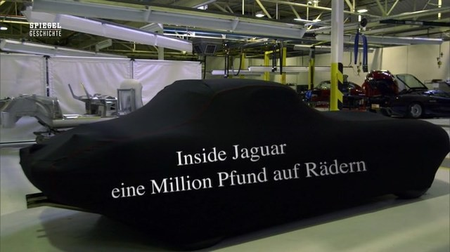

#9684 Inside Jaguar - Eine Million Pfund auf Rädern
 
 IMDB-Wertung: 0.0 / 10
IMDB-Wertung: 0.0 / 10  Metascore: 0
Metascore: 0 
In der Regel sind Autos Massenprodukte. Doch es gibt Ausnahmen von der Regel. Zum Beispiel den Jaguar Lightweight E Type. Dieses Luxusgefährt aus Aluminium gehört zweifellos zu den exklusivsten Fahrzeugen der Welt. Schließlich kann man die PS-Preziose auf vier Rädern nicht einfach kaufen — man wird eingeladen, um sie zu erwerben.
Jahr: 2018
Dauer: 47 Minuten
FSK:
Land: Studio: Tonspuren:
Untertitel:
Auflösung: 720p (1280x720) Größe: 1177 MB
Genre: Dokumentation
Regisseur:
Drehbuch:
Soundtrack:
Darsteller:
Datei: X:\Dokumentationen\Dokus(A-Z)\Inside Jaguar - Eine Million Pfund auf Rädern (2018, FSK, 1280x720).mkv seit 03.10.2018
Festplatte: HD Serien(SU-Z)+Dokus+Musik
 Es gibt insgesamt 34 Filme in der Gruppe 'Dokumentationen\Dokus(A-Z)'
Es gibt insgesamt 34 Filme in der Gruppe 'Dokumentationen\Dokus(A-Z)'